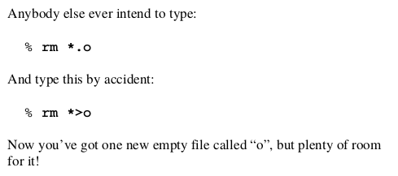

The Unix Hater's Handbook Overview
Created: 2021-01-26 | Modified : 2021-01-26

Sorry, I couldn't find a higher-res image. From here.
I recently read The Unix Hater's Handbook, which is a lighthearted take on the bad parts of Unix, or at least, the bad parts in their view. Overall, they have some good points, but they didn't convince me that Unix is bad.
Their main dislikes:
- Inconsistencies in program naming
headandtail- rm = bad because vague
- No command safety nets
- No real warnings before removing entire files/dirs
- "rm -r is very easy to hit accidentally, deleting all recursively"
- rm *.o - rm *>o
- No recycle bin
man- User scripting
- Baby duck syndrome
- "For Programmers, Not Users"
- C++
Inconsistencies in Similar Programs
Their example talks about head and tail, two programs which do similar things. head shows the top of document, and tail shows the bottom. These two programs take totally different options when they should be taking similar one to remain consistent. This is fair criticism.
No Command Safety Nets

This is an example from the book.
I can't say I've ever done this, but I can definitely see how easy it could. Quite scary really.

This too.
This can be fixed by amending rm to prompt y/n if you want to delete the file/dir. Either put it into a script, or write an alias.
No Recycle Bin
This is an issue. It's one of the things I wish would be implemented natively into Unix instead of having DE/WM specific variants. That being said, it isn't too hard to implement yourself. All you need to do is either create a script or an alias that amends rm to move the file to your trash directory instead of deleting it. This would be similar to the purge/remove trash system.
man Sucks
The authors say that man files suck because 1) they're hard to use, 2) are found in too many different dirs, and 3) are too minimal to be considered a manual. The last one is especially true. The issue really comes down to a naming problem: man is short for manual, when it was/is not manual. man is just an index of the flags/options you can use. These flags include small explanations for each. Their problem is that they think it's a manual, when it isn't.
User Scripting
They say that user scripting is something that is forced upon the user without choice. I agree. They say that this is something that should be unnecessary to the user. I disagree. Personally, I enjoy scripting, and find that by scripting stuff myself, I am able to understand and manipulate my computer to do what I want. I do understand that some people enjoy being out of control of their computers by using systems that dumb down the UX. In my mind, I should always be using the best tools for job. That's why I create my own scripts. Sometimes, the best way to get the job done is to use multiple tools. There's no point in doing everything by hand by using trash GUIs and having to switch programs each time I want to do a new action. That's just not optimal. I'd rather use the command line and automate the use of multiple programs (tools). After I'm done doing whatever job/task, I'll save the script so I won't every have to think about doing it. All I'll need to do is run the script and get the job done; No thought. This is why I think user scripting is not an issue, as it enhances the user experience, in my opinion.
Baby Duck Syndrome
"Unix is only "good" because we don't have any alternatives; It's all we know". That's baby duck syndrome. This is how they counter people saying Unix is the best. I can't say if this is right or wrong because the alternatives to Unix do suck (Windows, Mac OS X...).
"For Programmers, Not Users"
This is true. Unix at its core is for professional computer users, being sysadmins, programmers, IT people, etc. But, more recently with Linux, it is being molded into a pruned version for the sake of user friendlyness. By turning Linux into something that it isn't, you make it easier to do "basic tasks" (point and click file management, static theming, point and click programs, defaults programs...) but make it harder to do anything administratively and/or developmentally. Dumbing things down because people don't want to learn how to do something in the most effective way is a bad practice. People say that they don't want to learn because it takes too much time. If only they'd put in the time to learn the thing properly. They'd actually spend less time doing the task in the long run, hence, saving time.
C++ Sucks
This is true. I don't program in C++ because I think it's bad, so I wholeheartedly agree.